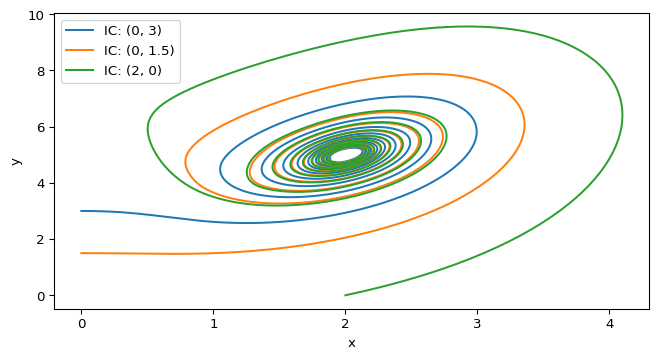

scipy.integrate.solve_ivp() and matplotlib.
2D Ordinary Differential Equations
The CDIMA model (Chlorine Dioxide–Iodine–Malonic Acid reaction) is a classic 2D chemical oscillator used to study phase-plane dynamics. The equations are:
\[\begin{aligned} \dot x &= a - x - \frac{4xy}{1+x^2} \\ \dot y &= bx \left( 1 - \frac{y}{1+x^2} \right) \end{aligned} \tag{1}\]
where \(x\) and \(y\) are the dimensionless concentrations of I\(^-\) and ClO\(_2^-\). The parameters \(a,\ b > 0\) depend on the empirical rate constants and on the concentrations assumed for the slow reactants (Strogatz 2024, chap. 8.3).
To understand the dynamics, we can analyze the phase plane. A phase plane is a 2D plot whose axes are the state variables (here, \(x\) and \(y\)). Each point \((x,y)\) represents the system’s state at a given time, and the differential equations define a vector field on this plane that indicates how the state evolves. Trajectories (solution curves) show how \((x(t),y(t))\) moves through the plane, revealing features such as equilibrium points, nullclines, limit cycles, and their stability.
scipy.integrate.solve_ivp() and matplotlib.
Generating this phase plane in Python is simple. We will follow the same approach as in 1D: define the right-hand side as a function, choose a time span and evaluation grid, and integrate with scipy.integrate.solve_ivp(). Follow the steps below.
First, define the cdima() function. Remeber that any ODE (in any dimension), can be written as:
def ode(t, state, *params):
# state represents the current values of the variables (e.g., x, y)
# params are any additional parameters needed to compute the derivatives
# each of them is separated by commas
return dstate_dt # this should be a sequence of the same length as `state`Can you write the cdima() function in this format? If you need an extra hint, uncollapse the code block below.
def cdima(t: float, state: tuple[float, float], a: int, b: int) -> tuple[float, float]:
"""Remember the docstring and type hints!"""
x, y = state # unpack the state variables
dxdt = # compute dx/dt
dydt = # compute dy/dt
return (dxdt, dydt) # return the derivatives as a listNext, we need to solve the initial value problem (IVP) for a given initial condition and parameters. The workflow is similar to 1D, but now we have a vector of state variables instead of a single variable. The solve_ivp() function will return the trajectories for both \(x(t)\) and \(y(t)\), which we can then plot in the phase plane.
Using scipy.integrate.solve_ivp() and your previously defined cdima() function, can you write the code to solve the IVP for a specific initial condition and parameters? The output should be the trajectories of \(x(t)\) and \(y(t)\), i.e. two arrays of the same length.
If you need a hint, uncollapse the code block below.
from scipy.integrate import solve_ivp
import numpy as np
# Define parameters
a, b = 10, 4
# Define initial condition
x0, y0 = 0, 3
# Define time span and evaluation points
t_span = (0, 20) # Start at t=0 and end at t=20
t_eval = np.linspace(t_span[0], t_span[1], 2000) # Return 2000 points between t=0 and t=20
# Solve the IVP
sol = solve_ivp(cdima, t_span, [x0, y0], args=(a, b), t_eval=t_eval)
# sol.y[0] will give you x(t) and sol.y[1] will give you y(t)Do you have it? Great! Try the following initial conditions: \(a=10\), \(b=4\), and \((x_0,y_0) = (0,3)\). You can see this trajectory in Figure 1. What will be the state of the system at \(t=5\)?
from scipy.integrate import solve_ivp
import numpy as np
from amlab.odes_2d.cdima import cdima
a, b = 10, 4
x0, y0 = 0, 3
t_span = (0, 5)
t_eval = np.linspace(t_span[0], t_span[1], 500)
sol = solve_ivp(cdima, t_span, [x0, y0], args=(a, b), t_eval=t_eval)
final_state = sol.y[:, -1] # Get the last column of sol.y, which corresponds to the state at t=5
print(f"State at t=5: x={final_state[0]:.2f}, y={final_state[1]:.2f}")State at t=5: x=2.08, y=4.13Finally, we can plot the trajectories in the phase plane using matplotlib.pyplot. Try to reproduce the plot in Figure 1 by plotting \(y(t)\) vs. \(x(t)\) for different initial conditions. You can also mark the initial conditions on the plot to see where the trajectories start.
import matplotlib.pyplot as plt
fig, ax = plt.subplots(figsize=(8, 4))
for x0, y0 in [(0, 3), (0, 1.5), (2, 0)]:
sol = solve_ivp(cdima, [0, 20], [x0, y0], args=(a, b), t_eval=np.linspace(0, 20, 2000))
ax.plot(sol.y[0], sol.y[1], label=f"IC: ({x0}, {y0})") # Plot y vs. x
ax.plot(x0, y0, 'o', color='black') # Mark the initial condition
plt.xlabel("x")
plt.ylabel("y")
plt.legend()
plt.show()In addition to trajectories, we can also plot nullclines in the phase plane. Nullclines are curves where the derivative of one of the variables is zero. They help us identify equilibrium points and understand the flow of trajectories.
matplotlib.pyplot.
How can we find the nullclines for the CDIMA system? We have two options:
Pick one of these methods to compute the nullclines for the CDIMA system, and then plot them in the phase plane. The intersection points of the nullclines correspond to equilibrium points of the system.
# Define the limits for the grid
x_min, x_max = 0.1, 5
y_min, y_max = 0, 10
num_points = 1000 # Number of points in the grid
# Create a grid of points
x_values = np.linspace(x_min, x_max, num_points)
y_values = np.linspace(y_min, y_max, num_points)
x_grid, y_grid = np.meshgrid(x_values, y_values)
# meshgrid creates two 2D arrays:
# x_grid and y_grid, where each element (i,j) corresponds to the
# coordinates (x_values[i], y_values[j]) in the phase plane.
# Evaluate the derivatives at each point
dx_dt: np.ndarray
dy_dt: np.ndarray
dx_dt, dy_dt = cdima(0, [x_grid, y_grid], a, b)
# Extract nullcline data:
# Find where dx_dt changes sign (zero crossings)
dxdt_zero_crossings = np.where(np.diff(np.sign(dx_dt), axis=0))
dxdt_nullcline_x = x_grid[dxdt_zero_crossings]
dxdt_nullcline_y = y_grid[dxdt_zero_crossings]
# Extract nullcline data - Find where dy_dt changes sign (zero crossings)
dydt_zero_crossings = np.where(np.diff(np.sign(dy_dt), axis=1))
dydt_nullcline_x = x_grid[dydt_zero_crossings]
dydt_nullcline_y = y_grid[dydt_zero_crossings]Now you can plot the nullclines using matplotlib Recommendation: do not join the points! There is no guarantee that the sequence of points in dxdt_nullcline_x and dxdt_nullcline_y (or dydt_nullcline_x and dydt_nullcline_y) will form a continuous curve, so it’s better to plot them as individual points (e.g., using 'o' markers) rather than trying to connect them with lines.
The intersection points of the nullclines correspond to equilibrium points (equilibria) of the system. In other words, they are points where both \(\dot x = 0\) and \(\dot y = 0\) simultaneously.
To find the equilibrium points, we can look for the coordinates where the x-nullcline and y-nullcline intersect. This can be done by checking for points that are close to each other in both nullcline datasets or by using a more systematic approach (e.g., clustering or root-finding methods).
In Python, we can use the scipy.optimize.fsolve() function to find the roots of the system of equations defined by the nullclines. This will give us the coordinates of the equilibrium points.
from scipy.optimize import fsolve
a, b = 10, 4
# We need to define a function that represents the system of
# equations for the nullclines
def cdima_fixed(xy: np.ndarray) -> np.ndarray:
return cdima(None, xy, a, b)
equilibrium_point = fsolve(cdima_fixed, [1, 1]) # Initial guess for the equilibrium point
print(f"Equilibrium point: x={equilibrium_point[0]:.2f}, y={equilibrium_point[1]:.2f}")If we have done things well, plotting the equilibrium point on the phase plane should show that it lies at the intersection of the nullclines.
scipy.optimize.fsolve() and matplotlib.pyplot.
As you know from 1D systems, a equilibrium point can be stable or unstable. A stable equilibrium point attracts nearby trajectories, while an unstable equilibrium point repels them. In 2D systems, we can determine the stability of an equilibrium point by analyzing the Jacobian matrix of the system at that point. The Jacobian matrix is a 2x2 matrix that contains the partial derivatives of the right-hand side of the ODEs with respect to the state variables.
\[J = \begin{bmatrix} \frac{\partial f}{\partial x} & \frac{\partial f}{\partial y} \\ \frac{\partial g}{\partial x} & \frac{\partial g}{\partial y} \end{bmatrix} \tag{2}\]
Where \(f\) and \(g\) are the right-hand sides of the ODEs for \(\dot x\) and \(\dot y\), respectively. The eigenvalues of the Jacobian determine the stability of the equilibrium point:
So all we need to do is compute the equilibrium point \((x^*, y^*)\), evaluate the Jacobian at that point, and compute its eigenvalues to determine stability.
As the CDIMA model has two parameters, we can explore how the stability of the equilibrium point changes as we vary \(a\) and \(b\). This leads to a stability diagram in the parameter space, which can be very insightful for understanding the system’s behavior.
For the CDIMA model, we can prove that the boundary between stable and unstable regimes is given by the curve \(b = \frac{3}{5} a - \frac{25}{a}\) in the \((a,b)\) parameter space (Strogatz 2024, chap. 8.3). Now go to your CDIMA simulation and explore how the trajectories change as you cross this boundary by varying \(a\) and \(b\).
Have you done all the steps above? Great! You should now have a good understanding of how to analyze a 2D ODE system using phase-plane methods. You can explore how changing the parameters affects the trajectories, nullclines, and equilibrium points. Try different initial conditions to see how the system’s behavior changes.
Your next steps:
matplotlib.animation. You can follow the guide showed here to get started.